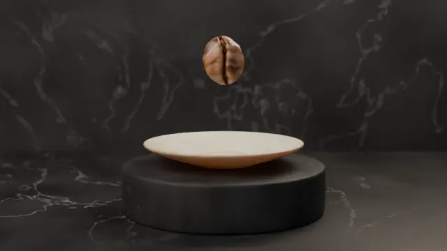

01Origen
El arte de la cata empieza en un solo grano.
Finca, altura y proceso. Todo lo que la cata buscará en la taza, el grano ya lo trae.
Vetamora
Cargando la experiencia…
No pudimos cargar la animación. Revisa tu conexión e inténtalo de nuevo.

La animación no se pudo cargar, pero aquí tienes la historia completa.
01Origen
Finca, altura y proceso. Todo lo que la cata buscará en la taza, el grano ya lo trae.
02Molienda y fragancia
Molienda gruesa, 8,25 g por cada 150 ml. Se huele el polvo antes de que toque el agua.
03Infusión y aroma
Se vierte hasta el borde y se deja reposar. En la superficie se forma una costra.
04Quiebre de la costra
Tres giros de cuchara y el aroma se libera de golpe. Es el instante más intenso de la cata.
05Sorbo y notas
Se sorbe con fuerza desde la cuchara mientras la taza se enfría, para leer acidez, cuerpo y dulzor.
Desliza para catar
Ficha de cata
Lo que anotó la mesa, atributo por atributo, en la escala de la SCA.
Notas de cata
Panela, mandarina y cacao. Acidez cítrica y brillante, cuerpo sedoso, final largo y limpio.
Ficha ilustrativa de una marca ficticia. El total suma, además de estos seis atributos, uniformidad, taza limpia y dulzor (10 cada uno) y la impresión global (8,00).
Mesa de cata
Sesiones pequeñas, con cucharas, tazas y tiempo.